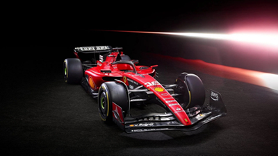

A Ferrari cég ábrás védjegyét az „ágaskodó ló” néven emlegetik.
A Ferrari emblémája egy sárga címerpajzson fekete ágaskodó lovat ábrázol,
általában egy „S” és egy „F” betű társaságában, amely a „Scuderia Ferrari” név rövidítése.
Az embléma tetején az olasz zászló színei: zöld, fehér, piros láthatóak.
A Formula-1 autók
Egy Ferrari Formula-1es autó láthatunk a képen ami piros
A Formula-1-es autók bemutatásáról lesz majd szó. Ki mikor találta ki a és hogy hogyan vagy miért jött neki ez az ötlet. Majd a későbbiekben munkalehetőséget nyújt néhány versenyző léleknek.
A Ferrari sportautók
A mindennapi használatban lévő versenyautókról lesz szó, ami luxus körülményeket és feledhetetlen élményeket szolgál. Igaz nem mindenki tudja megengedni magának, de be kell látni, hogy itt minőségi autóról van szó.